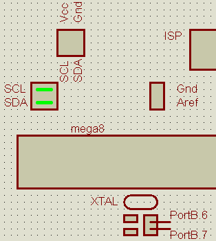

There's not much left to describe. Our mega8 board offers three more jumpers/connectors:
External Aref connector: This connector can be used to supply either an external reference voltage for the ADC or to route the internal ADC reference voltage of the mega8 (either Vcc or 2.56 V) to external circuits. It's a 2 pin connector with Aref and Gnd, whre Aref is next to the micro, Gnd is next to the ISP header.
TWI connector / Pull-up jumpers: The TWI connector provides the signals SDA (PortC.4), SCL (PortC.5), Gnd and Vcc so that external TWI slaves can be connected. The two jumpers can be closed to enable on board pullups on SCL and SDA.
PortB.6/PortB.7: These pins are also used by the crystal oscillator. As the oscillator traces have to be as short as possible these Port Pins are located next to the crystal. This also ensures that no external circuitry connected to the PortB header can disturb the oscillator. If the internal RC oscillator is used these pins can be used without limitations.
This drawing shows the connectors and (in green) how the TWI Pullup jumpers are set (if wanted):
